Definizione 3.10.1 (Fascio improprio di rette) Un fascio improprio di rette è l’insieme di tutte le rette parallele a una retta data. □
Una retta che interseca una retta del fascio le interseca tutte. Essa è detta trasversale del fascio. Quando le trasversali sono due, i punti in cui ogni retta del fascio interseca le trasversali sono detti corrispondenti. I segmenti corrispondenti sono quelli che hanno per estremi punti corrispondenti. La corrispondenza è biunivoca ed è detta corrispondenza di Talete.
Sono corrispondenti i punti A e A', B e B', C e C'. I segmenti AB e A'B', BC e B'C' sono corrispondenti.
Il teorema del fascio di rette parallele
Teorema 3.10.2 (del fascio di rette parallele o di Talete) Dato un fascio di rette parallele tagliato da due trasversali, a segmenti congruenti su una trasversale corrispondono segmenti congruenti sull’altra trasversale.
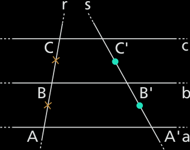
Il Teorema di Talete, nella sua formulazione più generale, afferma che se un fascio di rette parallele interseca due trasversali, allora i segmenti che si formano su una trasversale sono in proporzione con i segmenti corrispondenti sull'altra trasversale. Questo significa che se, su una trasversale, due segmenti sono congruenti, allora i segmenti corrispondenti sull'altra trasversale sono anch'essi congruenti.
Non finisce qui: consideriamo i segmenti somma AC e A'C'. Il teorema di Talete ci dice anche che:
Ipotesi
a // b // c;
r e s sono trasversali del fascio;
A,B,C ∈ r;
AB ≅ BC;
A',B',C' sono i corrispondenti di A,B,C.
Tesi. A'B' ≅ B'C';
Dim. Distinguiamo due casi.
Primo caso: r e s sono parallele.
AA'B'B (fig. sotto) è un parallelogramma, quindi i lati opposti sono congruenti. In particolare AB ≅ A'B'. Anche BB'C'C è un parallelogramma, quindi BC ≅ B'C'; AB ≅ BC per ipotesi, pertanto anche A'B' ≅ B'C', per la proprietà transitiva della congruenza.
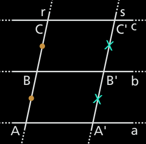
Secondo caso: r e s sono incidenti.
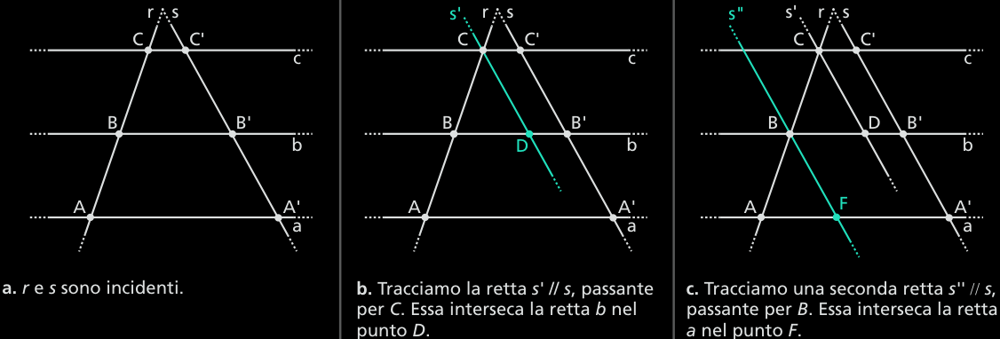
Il quadrilatero DB'C'C (figura b) è un parallelogramma, per costruzione, quindi CD ≅ C'B', perché lati opposti di un parallelogramma. Anche il quadrilatero FA'B'B è un parallelogramma per costruzione, quindi BF ≅ B'A'.
Consideriamo i triangoli AFB e BDC.
Essi hanno:
AB ≅ BC, per ipotesi;
α ≅ α', perché corrispondenti delle rette parallele a e b, tagliate dalla trasversaale r;
β ≅ β', perché corrispondenti delle rette parallele s e s', tagliate dalla trasversaale r;
Quindi i triangoli sono congruenti per il secondo criterio. In particolare, risulta BF ≅ CD.
Dalle conseguenze BF ≅ CD e BF ≅ A'B' deduciamo che CD ≅ A'B', per la proprietà transitiva. Da CD ≅ A'B' e CD ≅ B'C' concludiamo che A'B' ≅ B'C'. □
Conseguenze del Teorema di Talete sui triangoli: Corollari del Teorema di Talete
Corollario 3.10.3 (o Teorema della retta parallela). Una retta parallela ad un lato di un triangolo taglia gli altri due lati del triangolo in modo
proporzionale.
Da questo corrollatio ne deriva immediatamente il seguente.
Corollario 3.10.3 Se in un triangolo tracciamo la retta passante per il punto medio di un lato e parallela a un altro lato, essa incontra anche il terzo lato nel suo punto medio.
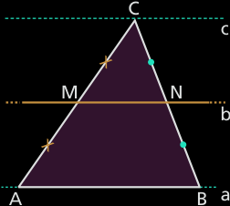
La retta b è la parallela al lato AB e passa per il punto medio M di AC. Disegniamo la retta per C parallela ad AB. Sulla trasversale AC i due segmenti AM e CM sono congruenti, quindi sulla trasversale BC i segmenti corrispondenti BN e CN sono anch’essi congruenti.
Vale anche il Viceversa:
Corollario 3.10.4 (o Teorema inverso della parallela). Se una retta taglia due lati di un triangolo in modo proporzionale, allora è parallela al terzo lato del triangolo
Da questo corrollario ne derivata direttamente un altro:
Corollario 3.10.5 Se in un triangolo si congiungono i punti medi di due lati, il segmento che si ottiene è parallelo al terzo lato e congruente alla sua metà.
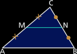Ipotesi.
ABC è un triangolo;
AM ≅ MC;
BN ≅ NC;
Tesi1. MN // AB; 2. MN ≅ AB/2.
Dim.
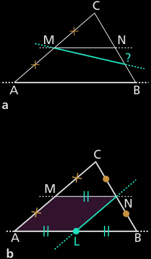
Tracciamo la retta passante per M parallela al lato AB (figura sopra). Essa incontra BC nel suo punto medio, per il corollario del teorema del fascio di rette parallele.
Disegniamo la retta passante per N parallela al lato AC (figura b). Essa incontra il lato AB nel punto L, che, per il corollario del teorema del fascio di rette, è il punto medio di AB. Pertanto AL ≅ LB.
Il quadrilatero ALNM è, per costruzione, un parallelogramma, quindi MN ≅ AL.
Dalle conseguenze MN ≅ AL e AL ≅ LB deduciamo che MN ≅ AB/2. □
Teorema 3.10.6 (della bisettrice dell'angolo interno di un triangolo). La bisettrice dell'angolo interno di un triangolo divide il lato opposto in parti proporzionali agli altri due lati
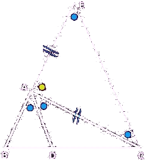
Ipotesi: BAD = DAC. TesiAB : AC = BD : DC.
Dim.
Si costruisce AE = AC, prolungando il segmento BA oltre A;
Si congiunge E con C → si ottiene il triangolo AEC, isoscele per costruzione ⇒ angoli alla base congruenti;
Si sfrutta il fatto che la somma degli angoli interni di un triangolo è un angolo piatto;
Si osserva che anche l'angolo BAE (cioè BAD + DAC + CAE) è piatto;
Uguagliando le somme e semplificando, si ricava:
∠𝐴𝐸𝐶 + ∠𝐴𝐶𝐸 = ∠𝐵𝐴𝐷 + ∠𝐷𝐴𝐶
Per congruenze (per costruzione e ipotesi), si arriva a ∠𝐷𝐴𝐶 = ∠𝐴𝐶𝐸;
Criterio di parallelismo: Questi due angoli sono alterni interni rispetto alle rette AD e CE tagliate da AC ⇒ AD ∥ CE.
Applicazione del teorema di Talete: Ora che hai due rette parallele (AD ∥ CE), tagliate dalle trasversali BE e DC, si applica il teorema di Talete nella forma:
AB/AE = BD/DC
E poiché AE = AC, otteniamo:
AB/AC = BD/DC
Questa proporzione è proprio l’obiettivo della dimostrazione! In altre parole, l'applicazione di Talete permette di concludere che i segmenti sulle trasversali sono in proporzione, grazie alla costruzione delle rette parallele. □
Il segmento con estremi nei punti medi dei lati di un trapezio
Teorema 3.10.7 In un trapezio, il segmento congiungente i punti medi dei lati obliqui è parallelo alle due basi e congruente alla loro semisomma.
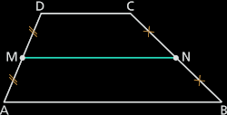
Ipotesi:
ABCD è un trapezio;
DM ≅ MA;
CN ≅ NB.
Tesi1.MN ⁄⁄ AB ⁄⁄ DC; 2.MN ≅ (AB + DC)/2.
Dim.
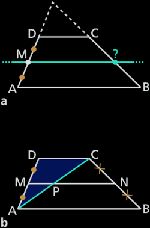
Tracciamo per M la parallela ad AB e DC (figura a). Essendo DM ≅ MA per l’ipotesi 2, essa incontra CB nel suo punto medio (per il corollario del teorema del fascio di rette parallele), che per l’unicità del punto medio di un segmento deve essere N. Quindi MN ⁄⁄ AB ⁄⁄ DC.
Tracciamo la diagonale AC che intersechi MN in P. Per il T. precedente, risulta:
nel triangolo ABC, NP ≅ AB/2;
nel triangolo DAC, PM ≅ DC/2;
Quindi, sommando membro a membro:
MN + PM ≅ (AB + DC)/2 ovvero NM ≅ (AB + CD)/2. □
Similar triangles
There's an important result following Thales theorem regarding similar triangles. Triangles ABC and A'B'C' are calles similar if their corresponding angles are equal, i.e., if
angle at A = angle at A' = (α)
angle at B = angle at B' = (β)
angle at C = angle at C' = (γ)
It turns out that equal angles imply that all sides are proportional, so we may say that one triangles is a magnification of the other, or that they have the same "shape".
Similar Triangles
Imagine cutting in two the triangle A'B'C' with a segment BC parallel to B'C', obtaining the triangle ABC. From Thales theorem
b/ (b' − b) = c/(c' − c)
Multiplying both sides by c(c' − c) gives b(c' − c) = c (b' − b), that is
bc' −bc = cb' − cb
and hence
bc' = cb'
Finally, dividing both sides by cc', we get
b/c = b'/c'
Thais is, corresponding sides of triangles ABC and A'B'C' opposite to the angles β and γ are proportional.